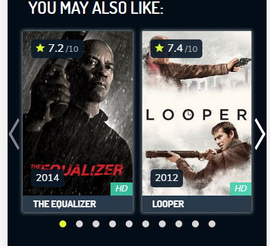
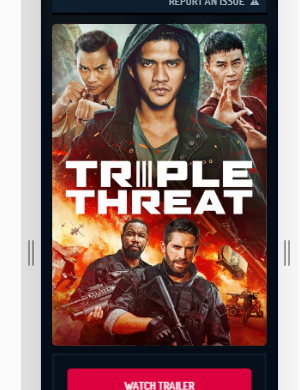

<4633694-spider-man-into-the-spider-verse-2018> - slug, can be found on movies list, related movies, featured movies.
On this step we are going to generate protected links for playlists and subtitles.
General process described in couple of steps
{
"success":true,
"meta":{
"title":"Spider-Man: Into the Spider-Verse",
"year":"2018",
"id_movie":"49385",
"slug":"4633694-spider-man-into-the-spider-verse-2018",
"description":"Miles Morales is juggling his life between being a high school student and being a spider-man. When Wilson \"Kingpin\" Fisk uses a super collider, others from across the Spider-Verse are transported to this dimension.",
"shard_url":"/storage4/",
"poster":"/iiZZdoQBEYBv6id8su7ImL0oCbD.jpg",
"cast":"[{\"id\": \"30637\", \"hero\": \"Miles Morales / Spider-Man (voice)\", \"name\": \"Shameik Moore\", \"role\": \"actor\", \"picture_url\": \"/1BpRfV7Ip53O5WNXwftgsbmnQ7x.jpg\"}, {\"id\": \"5224\", \"hero\": \"Peter B. Parker / Spider-Man (voice)\", \"name\": \"Jake Johnson\", \"role\": \"actor\", \"picture_url\": \"/7X6pb4SDs9RoXi5gI4Nl8ZiPO4l.jpg\"}, {\"id\": \"25953\", \"hero\": \"Gwen Stacy / Spider-Woman (voice)\", \"name\": \"Hailee Steinfeld\", \"role\": \"actor\", \"picture_url\": \"/evfMwuIPBACCJuLjHClrU50WyYo.jpg\"}, {\"id\": \"14805\", \"hero\": \"Aaron Davis / Prowler (voice)\", \"name\": \"Mahershala Ali\", \"role\": \"actor\", \"picture_url\": \"/waUvfhRSpVe4vk0hGVcsr0dhpK6.jpg\"}, {\"id\": \"50868\", \"hero\": \"Jefferson Davis (voice)\", \"name\": \"Brian Tyree Henry\", \"role\": \"actor\", \"picture_url\": \"/1h4sYFAc1inxcV0Ljrl5v2mMskI.jpg\"}, {\"id\": \"4190\", \"hero\": \"May Parker (voice)\", \"name\": \"Lily Tomlin\", \"role\": \"actor\", \"picture_url\": \"/eVEt45q7QIEoZQwINx7RfTE6Sk6.jpg\"}, {\"id\": \"22244\", \"hero\": \"Rio Morales (voice)\", \"name\": \"Lauren Vélez\", \"role\": \"actor\", \"picture_url\": \"/xZiNlLg9E2zgRSewE1BeWUlaqYO.jpg\"}, {\"id\": \"27702\", \"hero\": \"Peni Parker / SP//dr (voice)\", \"name\": \"Kimiko Glenn\", \"role\": \"actor\", \"picture_url\": \"/61YziLaS28m5OsaaGfvVvgoz6IP.jpg\"}, {\"id\": \"10623\", \"hero\": \"\", \"name\": \"Bob Persichetti\", \"role\": \"director\", \"picture_url\": \"\"}, {\"id\": \"7752\", \"hero\": \"\", \"name\": \"Peter Ramsey\", \"role\": \"director\", \"picture_url\": \"\"}, {\"id\": \"10624\", \"hero\": \"\", \"name\": \"Rodney Rothman\", \"role\": \"director\", \"picture_url\": \"\"}]",
"genres":"[{\"title\": \"Action\", \"id_genre\": \"28\"}, {\"title\": \"Adventure\", \"id_genre\": \"12\"}, {\"title\": \"Animation\", \"id_genre\": \"16\"}, {\"title\": \"Science Fiction\", \"id_genre\": \"878\"}, {\"title\": \"Comedy\", \"id_genre\": \"35\"}]",
"backdrop":"/7d6EY00g1c39SGZOoCJ5Py9nNth.jpg",
"imdb_rating":"8.7",
"duration":"117",
"youtube":"tg52up16eq0",
"tmdb_prefix":"324857"
},
"subtitles":{
"Arabic":{
"language":"Arabic",
"url":"movies/4633694-spider-man-into-the-spider-verse-2018-1550784500/subtitles/Arabic.vtt"
},
"Czech":{
"language":"Czech",
"url":"movies/4633694-spider-man-into-the-spider-verse-2018-1550784500/subtitles/Czech.vtt"
},
"Danish":{
"language":"Danish",
"url":"movies/4633694-spider-man-into-the-spider-verse-2018-1550784500/subtitles/Danish.vtt"
},
"English":{
"language":"English",
"url":"movies/4633694-spider-man-into-the-spider-verse-2018-1550784500/subtitles/English.vtt"
}
},
"related":[
{
"related_id_movie":"33953",
"slug":"4154756-avengers-infinity-war-2018",
"title":"Avengers: Infinity War",
"year":"2018",
"poster":"/7WsyChQLEftFiDOVTGkv3hFpyyt.jpg",
"imdb_rating":"8.6",
"flag_quality":"8"
},
{
"related_id_movie":"15212",
"slug":"logan-2017",
"title":"Logan",
"year":"2017",
"poster":"/gGBu0hKw9BGddG8RkRAMX7B6NDB.jpg",
"imdb_rating":"8.1",
"flag_quality":"8"
},
{
"related_id_movie":"15675",
"slug":"spider-man-homecoming-2017",
"title":"Spider-Man: Homecoming",
"year":"2017",
"poster":"/c24sv2weTHPsmDa7jEMN0m2P3RT.jpg",
"imdb_rating":"7.5",
"flag_quality":"8"
}
]
}
root.success - if movie is found in database, then success = true returned
root.related - slider of related movies.

root.meta.poster - to create movie poster, need to prepend url to value, example: "https://image.tmdb.org/t/p/w500/oKYF5HmimhnGJ3x8G20WHeNpKkT.jpg". Value can be empty.

root.meta.backdrop:
used as background image on player, to get image need to prepend URL to backdrop, example "https://image.tmdb.org/t/p/w780/2f8fkWSWOVcTlWforoVpsuaCiwI.jpg"
also used as background in movie view page, to create background image need to prepend URL, example "https://image.tmdb.org/t/p/w300/2f8fkWSWOVcTlWforoVpsuaCiwI.jpg"
root.meta.cast - json encoded cast list
root.meta.genres - json encoded genres list
Example:
GET https://lookmovie.ag/query-storage/
response:
{
domain: "https://fe3.lookmovie.ag",
sampleBW: 47355735
}
We are going to use root.domain to create links for streaming
GET: https://lookmovie.ag/web-api/v1/movies/storage?id_movie=49385
Response:
{
success: true,
expires: 1554143673,
accessToken: "lbfnoonotvih9zN_d9ck9A"
}
Example For Arabic subtitles:
root.domain + '/' root.accessToken + '/' + root.expires + root.meta.shard + root.subtitles.Arabic.url
resulting url going to look like this:
https://fe3.lookmovie.ag/lbfnoonotvih9zN_d9ck9A/1554143673/storage4/movies/4633694-spider-man-into-the-spider-verse-2018-1550784500/subtitles/Arabic.vtt
GET: "https://fe2.lookmovie.ag/manifests/v2/movies/json/" + root.expires + "/" + root.meta.id_movie + "/" + root.accessToken + "/master.m3u8"
Response:
{
"360p":"/gzqwJfXwgd3-vMxWpMfpHw/1554146667/storage2/movies/1477834-aquaman-2018-1552183056/360p/index.m3u8\n",
"480p":"/gzqwJfXwgd3-vMxWpMfpHw/1554146667/storage2/movies/1477834-aquaman-2018-1552183056/480p/index.m3u8\n",
"720p":"/gzqwJfXwgd3-vMxWpMfpHw/1554146667/storage2/movies/1477834-aquaman-2018-1552183056/720p/index.m3u8\n",
"1080p":"/gzqwJfXwgd3-vMxWpMfpHw/1554146667/storage2/movies/1477834-aquaman-2018-1552183056/1080p/index.m3u8\n"
}
Now We Can Create links for different stream qualities, just need to prepend to each quality root.domain
example:
https://fe3.lookmovie.ag/gzqwJfXwgd3-vMxWpMfpHw/1554146667/storage2/movies/1477834-aquaman-2018-1552183056/1080p/index.m3u8